Inside the SOC Live
Dashboards and command-line screenshots from inside the build. Attacks generated, 4.2 million logs collected, and detections firing in Wazuh, Security Onion, Suricata, and Nessus.
Detection & Response
WAZUH · SECURITY ONION · SURICATAEvery attack against the lab is mapped to MITRE ATT&CK and surfaced as a live alert, from the SIEM dashboards down to individual IDS signatures.
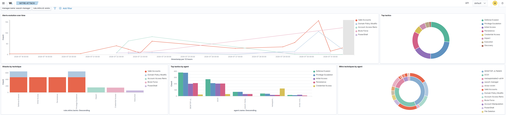
MITRE ATT&CK coverage
Every detection mapped to tactic and technique, with alert evolution, top tactics, and a per-agent breakdown.
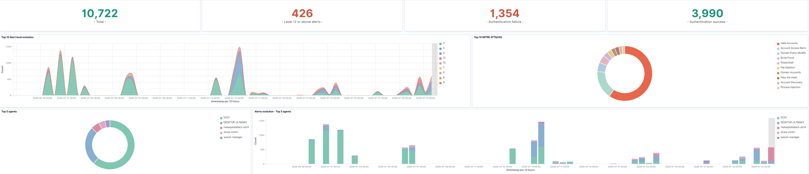
Alert summary · 10,722 events
426 level-12+ critical alerts, authentication successes vs failures, and top-firing agents.
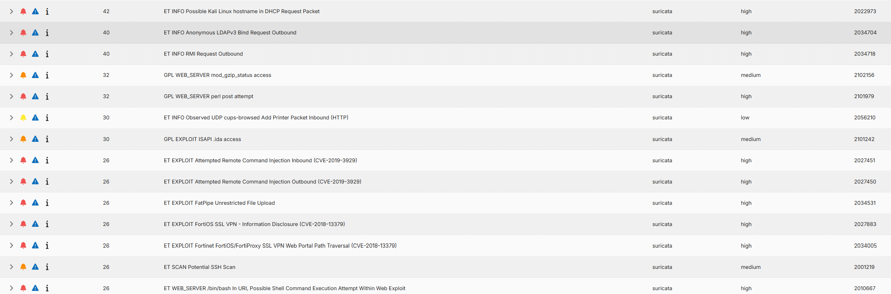
High-severity signatures
ET/GPL rules catching live CVE exploitation and reconnaissance.
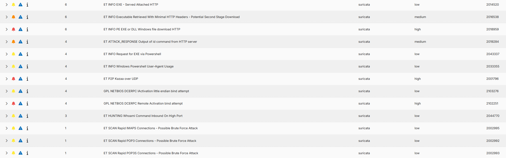
Payload & scan detections
Executable downloads, whoami execution, and brute-force scan attempts.
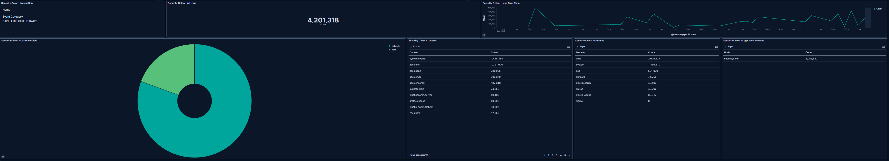
4.2M events at scale
Full-network visibility from Zeek, Suricata, and host telemetry across every VLAN.
Threat Hunting
SECURITY ONION · ZEEKPivoting through the data to hunt what signatures miss: application-layer exploits, traffic patterns by segment, and protocol anomalies.
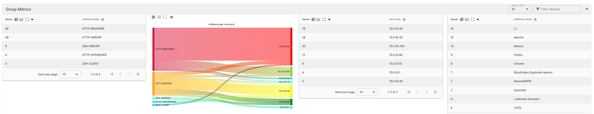
Log4Shell caught in traffic
Hunting HTTP metadata surfaced the ${jndi:ldap://…} exploitation string by source host.
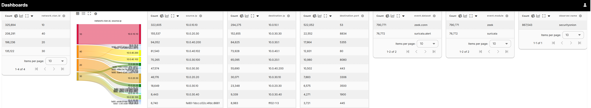
Traffic by VLAN & port
790k Zeek connection events broken down by segment, source, and destination port.
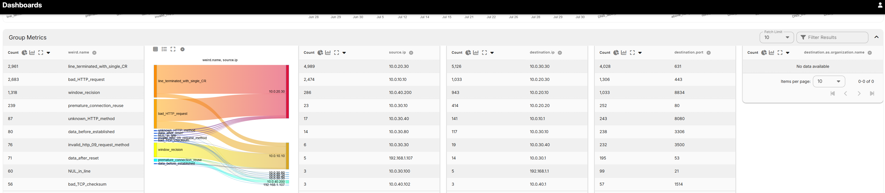
Protocol anomalies
Zeek "weird" events: malformed HTTP, bad TCP checksums, and other oddities by host.
Vulnerability Management
WAZUH · NESSUSFinding and prioritizing weaknesses before an attacker does: severity triage and authenticated scanning.
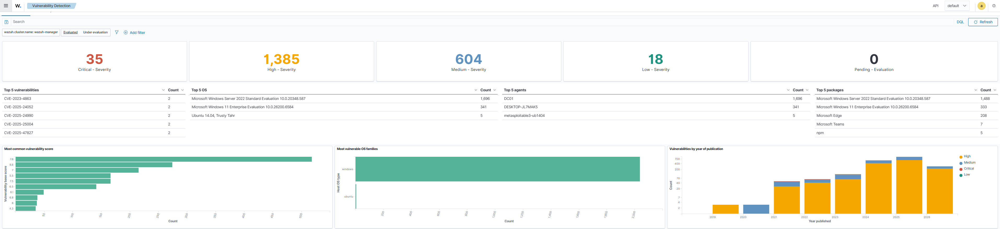
Severity triage · 35 critical, 1,385 high
Critical-to-low breakdown, top CVEs, most-vulnerable OS families, and vulnerabilities by year.
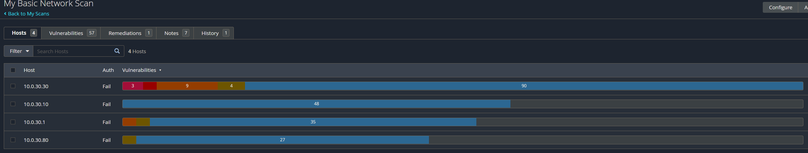
57 findings across 4 hosts
Authenticated network vulnerability scan, ranked by CVSS severity from critical to informational.
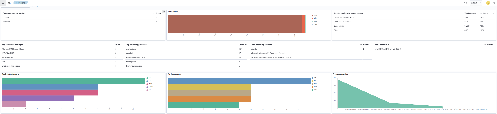
Endpoint hygiene
OS families, package inventory, running processes, and memory usage by host.
Attack Simulation
KALI · SLIVER · METASPLOIT · CALDERAThe offensive side of the lab: the C2 frameworks and tooling used to generate the traffic the blue team detects.
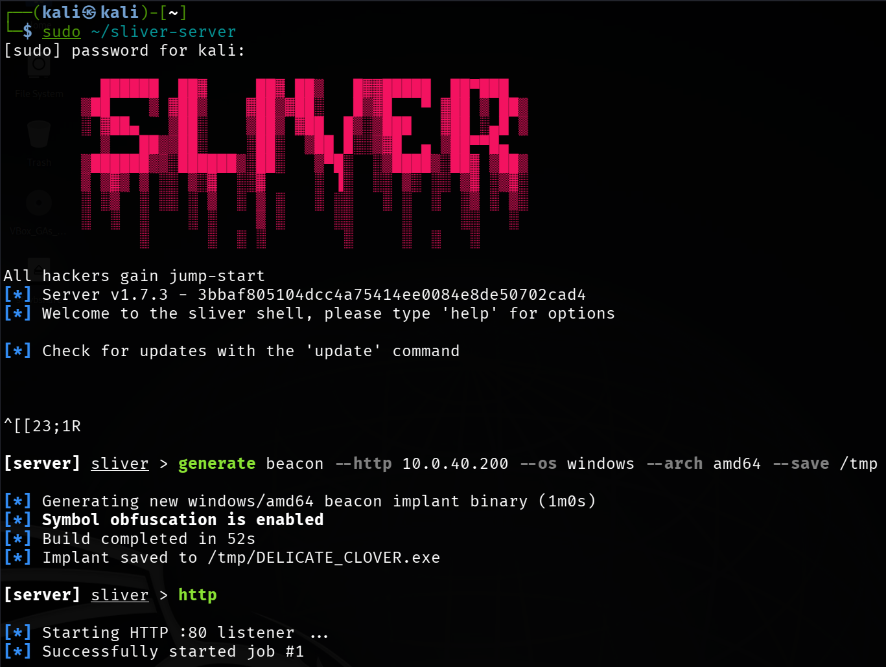
Sliver implant generation
HTTP beacon built with symbol obfuscation, then the listener started.
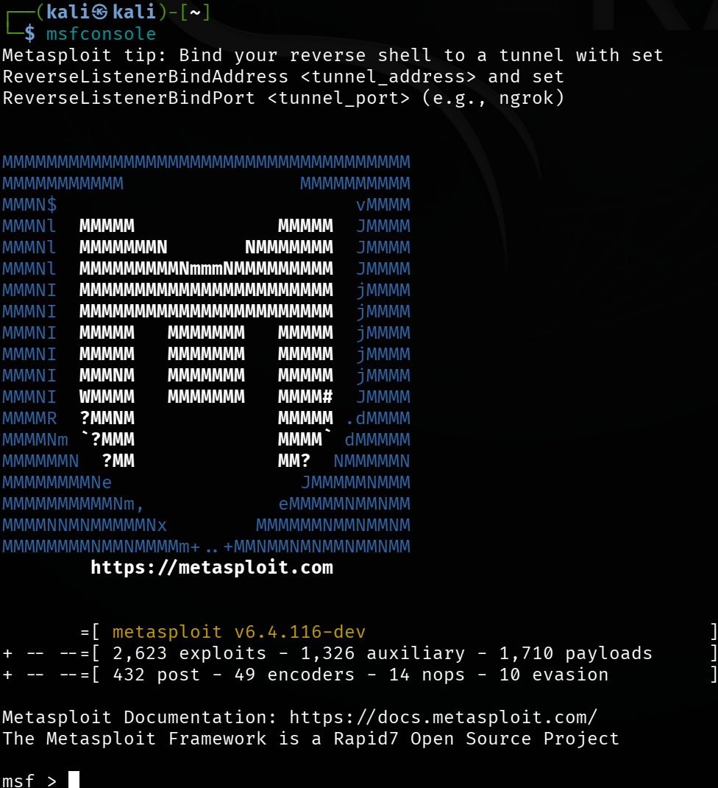
Metasploit Framework
2,600+ exploits and 1,700+ payloads available in the framework.
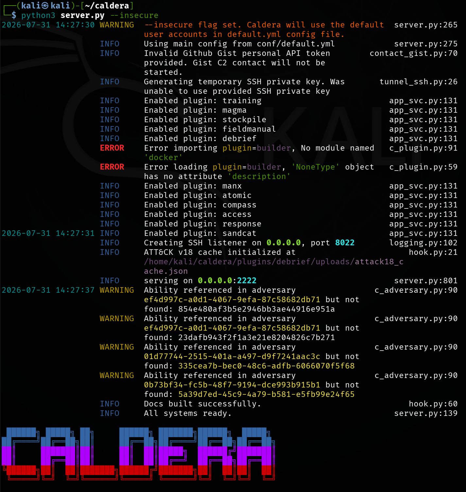
Caldera automation
Automated ATT&CK adversary emulation orchestrating scripted attack chains.
Platform & Health
SECURITY ONION · WAZUH · SALTSTACKThe infrastructure behind it all: a healthy, agent-covered, config-managed stack.
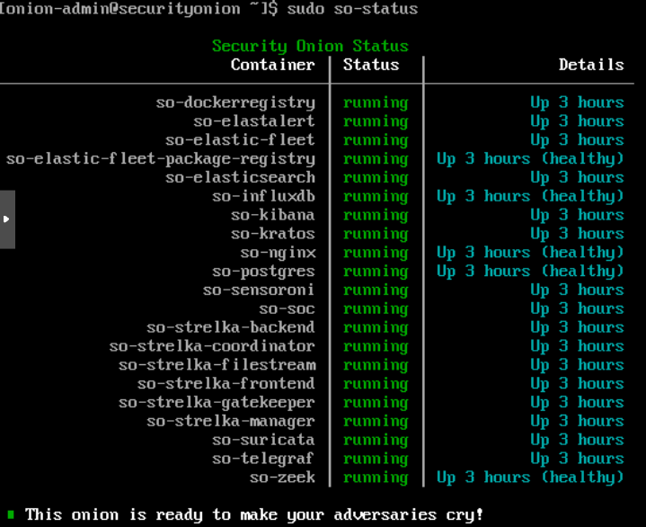
Full stack, all green
Every Security Onion container up and healthy.
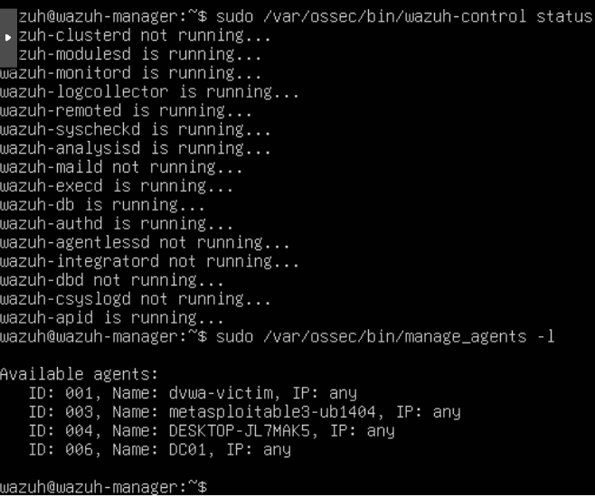
Agents enrolled & reporting
Host telemetry from DC01, DVWA, Metasploitable3, and the Windows victim.
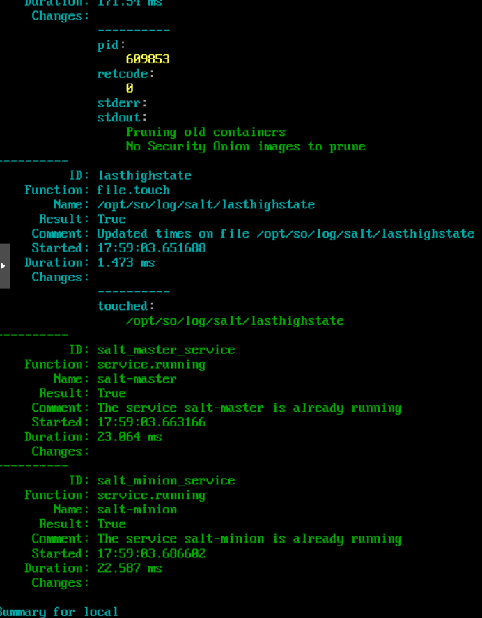
Salt highstate
Configuration management enforced across the Security Onion grid.
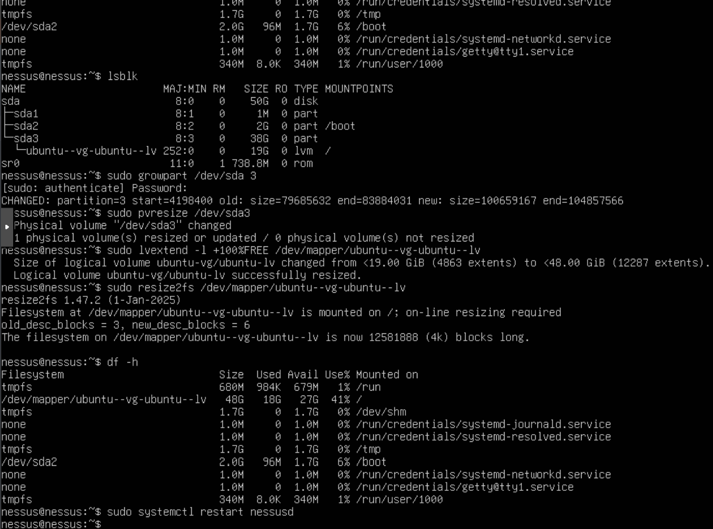
Scanner provisioning
LVM storage expansion on the Nessus host: hands-on Linux administration.
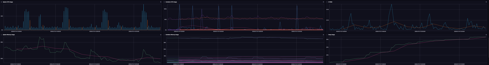
Security Onion performance
InfluxDB metrics for the Security Onion node: CPU, memory, and IO.
ATT&CK Technique Coverage
MITRE ATT&CKEvery tactic and technique exercised against the lab, mapped to MITRE ATT&CK. Highlighted techniques were actively attacked and detected.